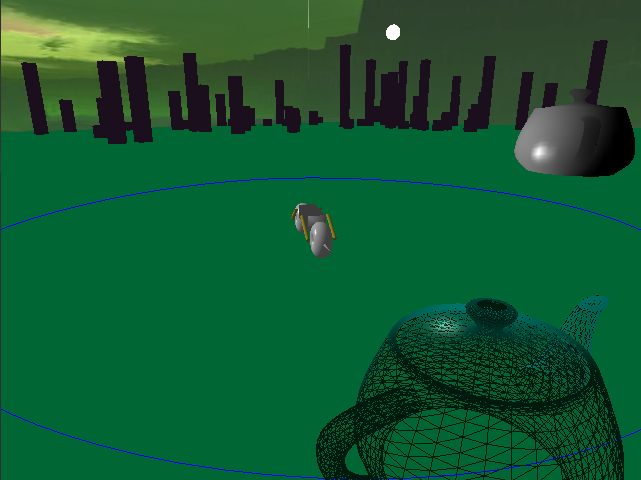

CSCI 441 - Computer GraphicsFall 2021 |
|
| | Home | Assignments | Leaderboard | Schedule | Resources | | |
GARRICKAssignment 1: Hoist Your Sign
This is Garrick's banner, containing his name and crest. The crest and the character are inspired by a recent Dungeons & Dragons campaign I participated in, in which I played a human Artificer named Garrick. His companion is named Azure, hence the blue highlighting of the A in Garrick's banner. Assignment 2: An Unexpected Journey
This is Garrick, drawn from a program I wrote that has him moving through the various world locations that the students of CSCI441 created. I chose a pixel sort of art style, which allowed for simplicity and less overall complexity. I'm particularly proud of how I wrote the program in that sense; I added sets of two triangles to the vertex array buffer with vertex positions based on a "pixel conversion factor" around the point I specified. Assignment 3: To The Arena!This is Garrick's vehicle of choice, his motorcycle. This was drawn in OpenGL like the other things on this page, but this program was my first major assignment in 3D space. I got to program my own shaders and apply them, as well as transform primitives. Midterm Poject: The Main AttractionGarrick has chosen his partners and formed his guild for the journey into the arena. In addition to his motorcycle are the vehicles of Jotaro Kujo and Remarin. This assignment was a group effort to implement different camera models, movement, and shading. 
Among the camera models are an arcball camera, a free camera, and a first person camera that can be toggled. Shading and illumination are based on the Gouraud and Phong models, respectively. This is the centerpiece of the area, a teapot that spins while the vehicles move. Assignment 4: Off to Never Never LandAssignment 4! Almost finished with the semester! This one was all about Bezier curves. The cyan teapot revolves around Garrick's motorcycle, which has been given an upgrade since the last project (new shaders, higher res model). The teapot also rotates on its own axis for added effect. Assigment 5: The Barbarian Horde
Assignment 5! Last one of the semester before the final project! This one was less fun to make, and I'll admit that I slacked a little with the design of the space (see the color of the ground plane compared to the skybox, the general lack of scenery, etc)--I'm starting to feel that end-of-semester burnout. I'm going to finish strong with the final project though, my team has some cool stuff planned! This assignment has two important things: collision detection and particle systems. The particle systems are each comprised of the ruby cubes and the spherical enemies on the field with the player (who operates Garrick's motorcycle from the other assignments). The goal is simple: collect all the cubes and avoid the enemies, and you win! If you fall off the edge or touch an enemy, the game ends. Final Project: Not Crossy RoadThe final project is here! My team elected to create a game similar to Frogger. It combines everything we've learned this semester so far, including shader programming, particle systems, texturing, and animation! This was really fun to make, though we ran out of time to implement everything we wanted (finals are tough, man). | |